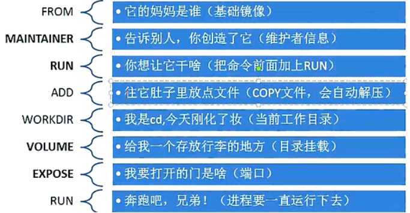

Django应用容器化实践
django项目介绍
构建命令
$ docker build . -t ImageName:ImageTag -f Dockerfile
如何理解构建镜像的过程？
Dockerfile是一堆指令，在docker build的时候，按照该指令进行操作，最终生成我们期望的镜像
| PowerShell |
|---|
| 格式：
FROM <image>
FROM <image>:<tag>
示例：
FROM mysql:5.7
注意：
tag是可选的，如果不使用tag时，会使用latest版本的基础镜像
|
| PowerShell |
|---|
| 格式：
MAINTAINER <name>
示例：
MAINTAINER Yongxin Li
MAINTAINER inspur_lyx@hotmail.com
MAINTAINER Yongxin Li <inspur_lyx@hotmail.com>
|
| PowerShell |
|---|
| 格式：
COPY <src>... <dest>
示例：
ADD hom* /mydir/ # 添加所有以"hom"开头的文件
ADD test relativeDir/ # 添加 "test" 到 `WORKDIR`/relativeDir/
ADD test /absoluteDir/ # 添加 "test" 到 /absoluteDir/
|
| PowerShell |
|---|
| 格式：
WORKDIR /path/to/workdir
示例：
WORKDIR /a (这时工作目录为/a)
注意：
通过WORKDIR设置工作目录后，Dockerfile中其后的命令RUN、CMD、ENTRYPOINT、ADD、COPY等命令都会在该目录下执行
|
| PowerShell |
|---|
| 格式：
RUN <command>
示例：
RUN yum install nginx
RUN pip install django
RUN mkdir test && rm -rf /var/lib/unusedfiles
注意：
RUN指令创建的中间镜像会被缓存，并会在下次构建中使用。如果不想使用这些缓存镜像，可以在构建时指定--no-cache参数，如：docker build --no-cache
|
- CMD 构建容器后调用，也就是在容器启动时才进行调用
| PowerShell |
|---|
| 格式：
CMD ["executable","param1","param2"] (执行可执行文件，优先)
CMD ["param1","param2"] (设置了ENTRYPOINT，则直接调用ENTRYPOINT添加参数)
CMD command param1 param2 (执行shell内部命令)
示例：
CMD ["/usr/bin/wc","--help"]
CMD ping www.baidu.com
注意：
CMD不同于RUN，CMD用于指定在容器启动时所要执行的命令，而RUN用于指定镜像构建时所要执行的命令。
|
- ENTRYPOINT 设置容器初始化命令，使其可执行化
| PowerShell |
|---|
| 格式：
ENTRYPOINT ["executable", "param1", "param2"] (可执行文件, 优先)
ENTRYPOINT command param1 param2 (shell内部命令)
示例：
ENTRYPOINT ["/usr/bin/wc","--help"]
注意：
ENTRYPOINT与CMD非常类似，不同的是通过docker run执行的命令不会覆盖ENTRYPOINT，而docker run命令中指定的任何参数，都会被当做参数再次传递给ENTRYPOINT。Dockerfile中只允许有一个ENTRYPOINT命令，多指定时会覆盖前面的设置，而只执行最后的ENTRYPOINT指令
|
| PowerShell |
|---|
| 格式：
ENV <key> <value>
ENV <key>=<value>
示例：
ENV myName John
ENV myCat=fluffy
|
| PowerShell |
|---|
| 格式：
EXPOSE <port> [<port>...]
示例：
EXPOSE 80 443
EXPOSE 8080
EXPOSE 11211/tcp 11211/udp
注意：
EXPOSE并不会让容器的端口访问到主机。要使其可访问，需要在docker run运行容器时通过-p来发布这些端口，或通过-P参数来发布EXPOSE导出的所有端口
|

Dockerfile
dockerfiles/myblog/Dockerfile
| PowerShell |
|---|
| # This my first django Dockerfile
# Version 1.0
# Base images 基础镜像
FROM centos:centos7.5.1804
#MAINTAINER 维护者信息
LABEL maintainer="inspur_lyx@hotmail.com"
#ENV 设置环境变量
ENV LANG en_US.UTF-8
ENV LC_ALL en_US.UTF-8
#RUN 执行以下命令
RUN curl -so /etc/yum.repos.d/Centos-7.repo http://mirrors.aliyun.com/repo/Centos-7.repo
RUN yum install -y python36 python3-devel gcc pcre-devel zlib-devel make net-tools
#工作目录
WORKDIR /opt/myblog
#拷贝文件至工作目录
COPY . .
#安装nginx
RUN tar -zxf nginx-1.13.7.tar.gz -C /opt && cd /opt/nginx-1.13.7 && ./configure --prefix=/usr/local/nginx \
&& make && make install && ln -s /usr/local/nginx/sbin/nginx /usr/bin/nginx
RUN cp myblog.conf /usr/local/nginx/conf/myblog.conf
#安装依赖的插件
RUN pip3 install -i http://mirrors.aliyun.com/pypi/simple/ --trusted-host mirrors.aliyun.com -r requirements.txt
RUN chmod +x run.sh && rm -rf ~/.cache/pip
#EXPOSE 映射端口
EXPOSE 8002
#容器启动时执行命令
CMD ["./run.sh"]
|
执行构建：
$ docker build . -t myblog:v1 -f Dockerfile
定制化基础镜像
<font style="color:rgb(51, 51, 51);background-color:rgb(243, 244, 244);">dockerfiles/myblog/Dockerfile-base</font>
| PowerShell |
|---|
| # Base images 基础镜像
FROM centos:centos7.5.1804
#MAINTAINER 维护者信息
LABEL maintainer="inspur_lyx@hotmail.com"
#ENV 设置环境变量
ENV LANG en_US.UTF-8
ENV LC_ALL en_US.UTF-8
#RUN 执行以下命令
RUN curl -so /etc/yum.repos.d/Centos-7.repo http://mirrors.aliyun.com/repo/Centos-7.repo
RUN yum install -y python36 python3-devel gcc pcre-devel zlib-devel make net-tools
COPY nginx-1.13.7.tar.gz /opt
#安装nginx
RUN tar -zxf /opt/nginx-1.13.7.tar.gz -C /opt && cd /opt/nginx-1.13.7 && ./configure --prefix=/usr/local/nginx && make && make install && ln -s /usr/local/nginx/sbin/nginx /usr/bin/nginx
|
| PowerShell |
|---|
| ## 构建基础镜像
$ docker build . -t centos-python3-nginx:v1 -f Dockerfile-base
$ docker tag centos-python3-nginx:v1 172.21.32.6:5000/base/centos-python3-nginx:v1
$ docker push 172.21.32.6:5000/base/centos-python3-nginx:v1
|
简化Dockerfile
<font style="color:rgb(51, 51, 51);background-color:rgb(243, 244, 244);">dockerfiles/myblog/Dockerfile-optimized</font>
| PowerShell |
|---|
| # This my first django Dockerfile
# Version 1.0
# Base images 基础镜像
FROM centos-python3-nginx:v1
#MAINTAINER 维护者信息
LABEL maintainer="inspur_lyx@hotmail.com"
#工作目录
WORKDIR /opt/myblog
#拷贝文件至工作目录
COPY . .
RUN cp myblog.conf /usr/local/nginx/conf/myblog.conf
#安装依赖的插件
RUN pip3 install -i http://mirrors.aliyun.com/pypi/simple/ --trusted-host mirrors.aliyun.com -r requirements.txt
RUN chmod +x run.sh && rm -rf ~/.cache/pip
#EXPOSE 映射端口
EXPOSE 8002
#容器启动时执行命令
CMD ["./run.sh"]
|
$ docker build . -t myblog -f Dockerfile-optimized
运行mysql
| PowerShell |
|---|
| $ docker run -d -p 3306:3306 --name mysql -v /opt/mysql/mysql-data/:/var/lib/mysql -e MYSQL_DATABASE=myblog -e MYSQL_ROOT_PASSWORD=123456 mysql:5.7
## 查看数据库
$ docker exec -ti mysql bash
#/ mysql -uroot -p123456
#/ show databases;
## navicator连接
|
启动Django应用
| PowerShell |
|---|
| ## 启动容器
$ docker run -d -p 8002:8002 --name myblog -e MYSQL_HOST=172.21.32.6 -e MYSQL_USER=root -e MYSQL_PASSWD=123456 myblog
## migrate
$ docker exec -ti myblog bash
#/ python3 manage.py makemigrations
#/ python3 manage.py migrate
#/ python3 manage.py createsuperuser
## 创建超级用户
$ docker exec -ti myblog python3 manage.py createsuperuser
## 收集静态文件
## $ docker exec -ti myblog python3 manage.py collectstatic
|
访问62.234.214.206:8002/admin
构建镜像，替换默认编码：
<font style="color:rgb(51, 51, 51);background-color:rgb(243, 244, 244);">dockerfiles/mysql/my.cnf</font>
| PowerShell |
|---|
| $ cat my.cnf
[mysqld]
user=root
character-set-server=utf8
lower_case_table_names=1
[client]
default-character-set=utf8
[mysql]
default-character-set=utf8
!includedir /etc/mysql/conf.d/
!includedir /etc/mysql/mysql.conf.d/
|
<font style="color:rgb(51, 51, 51);background-color:rgb(243, 244, 244);">dockerfiles/mysql/Dockerfile</font>
| PowerShell |
|---|
| FROM mysql:5.7
COPY my.cnf /etc/mysql/my.cnf
## CMD或者ENTRYPOINT默认继承
|
| PowerShell |
|---|
| $ docker build . -t mysql:5.7-utf8
$ docker tag mysql:5.7-utf8 172.21.16.3:5000/mysql:5.7-utf8
$ docker push 172.21.16.3:5000/mysql:5.7-utf8
## 删除旧的mysql容器，使用新镜像启动,不用再次初始化
$ docker rm -f mysql
$ rm -rf /opt/mysql/mysql-data/*
$ docker run -d -p 3306:3306 --name mysql -v /opt/mysql/mysql-data/:/var/lib/mysql -e MYSQL_DATABASE=myblog -e MYSQL_ROOT_PASSWORD=123456 172.21.32.6:5000/mysql:5.7-utf8
## 重新migrate
$ docker exec -ti myblog bash
#/ python3 manage.py makemigrations
#/ python3 manage.py migrate
#/ python3 manage.py createsuperuser
|